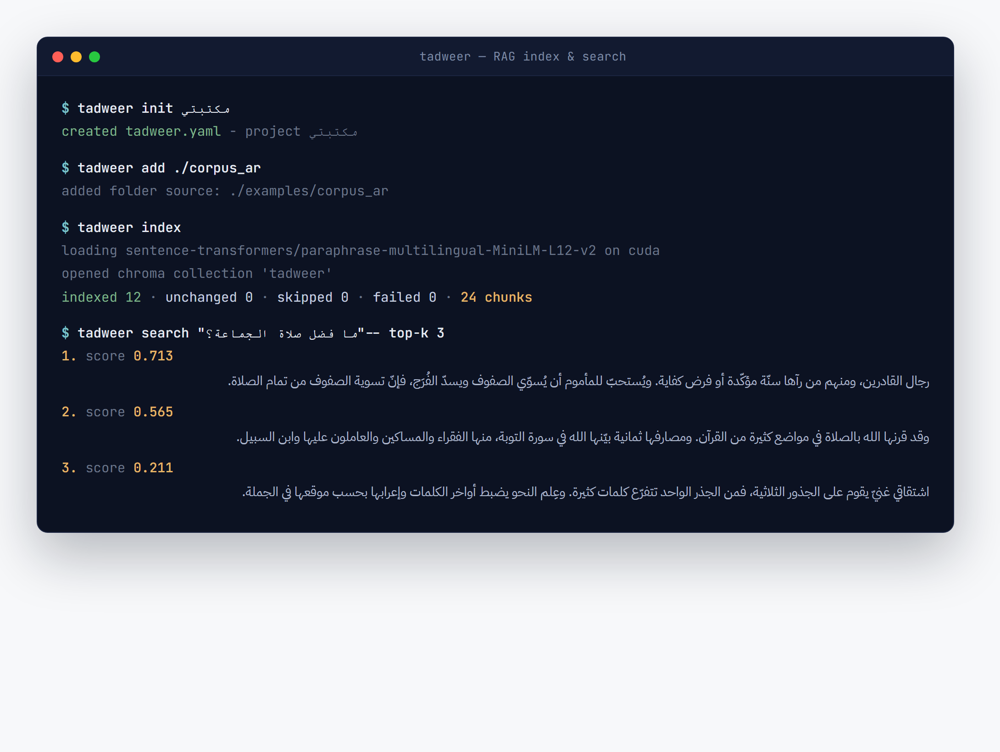
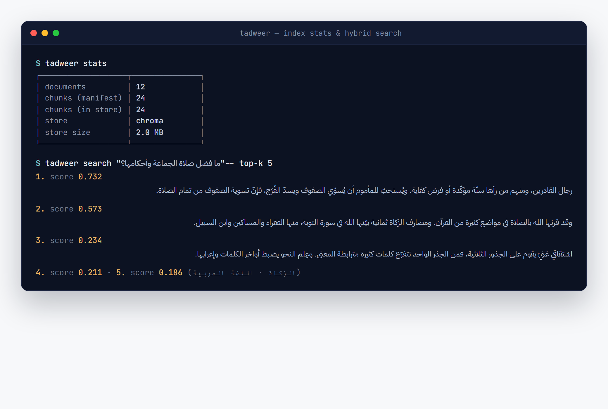
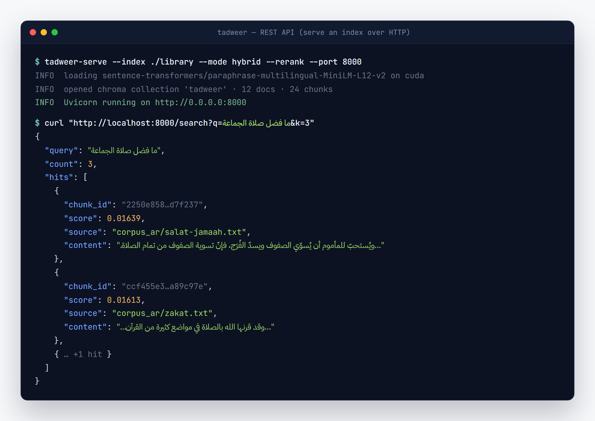
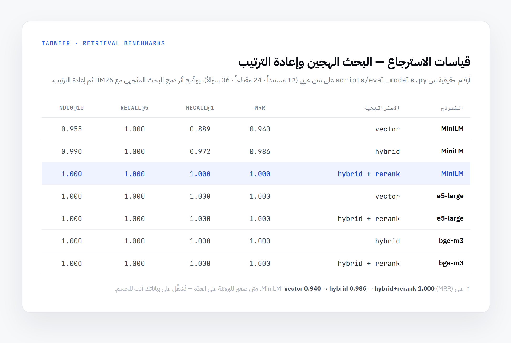

إطار يبني نظام RAG كاملاً من الصفر: تحليل المستندات، والتقطيع، والـ embeddings، والاسترجاع الهجين، وإعادة الترتيب، والتوليد الموثَّق بالاستشهادات، مع نواة domain خالية تماماً من الاعتماديات. A framework that builds a COMPLETE RAG system from scratch — parsing, chunking, embeddings, hybrid retrieval, reranking, and cited generation — with a dependency-free domain core.
إطار RAG متكامل من البداية إلى النهاية، مبنيّ فعلاً من الصفر لا غلافاً حول LangChain. والمسار كامل: تحليل المستندات (PDF، DOCX، TXT، HTML، EPUB، PPTX، XLSX، والصور عبر OCR، والصوت عبر STT) ← تقطيع (أكثر من 8 استراتيجيات) ← embeddings ← مخزن متّجهات ← بحث هجين (متّجهات كثيفة + BM25 يُدمَجان عبر Reciprocal-Rank Fusion) ← إعادة ترتيب عبر cross-encoder ← توليد RAG باستشهادات على مستوى المقطع. An end-to-end RAG framework, genuinely built from scratch — not a LangChain wrapper. The pipeline: document parsing (PDF, DOCX, TXT, HTML, EPUB, PPTX, XLSX, images via OCR, audio via STT) → chunking (8+ strategies) → embeddings → vector store → hybrid search (dense vectors + BM25 fused with Reciprocal-Rank Fusion) → cross-encoder reranking → RAG generation with chunk-level citations.
يأتي الإطار بواجهة سطر أوامر tadweer (init/add/index/search/status/eval)، ومعالج سطح مكتب بـ PyQt6، وخادم REST بـ FastAPI، وصيغ تصدير ONNX وحزمة مدمجة، ومنظومة تقييم (MRR، Recall@k، nDCG@k). ودعم اللغات المتعدّدة مدمج في كامل المسار لا مُلصق عليه لاحقاً. أما الحالة فهي: الإصدار v0.2.0، والمرحلة الثالثة شبه مكتملة.
It ships a tadweer CLI (init/add/index/search/status/eval), a PyQt6 desktop GUI wizard, a FastAPI REST server, ONNX + embedded-bundle export targets, and an evaluation harness (MRR, Recall@k, nDCG@k). Multilingual support is baked in across the whole pipeline, not bolted on. Status: v0.2.0, Phase 3 mostly complete.
مخرجات حقيقية من الأداة وهي تعمل: CLI، وبحث هجين، وREST API، وقياسات الاسترجاعReal output from the working tool: CLI, hybrid search, REST API, and retrieval benchmarks




معمارية نظيفة متعدّدة الطبقات مع انعكاس الاعتماديات (DIP)، والنواة لا تستورد أيّ اعتمادية خارجيةLayered clean architecture + dependency inversion — the core imports zero external deps
// clean / layered architecture · dependency inversion pivot ┌─ Presentation tadweer CLI (Typer+Rich) · PyQt6 desktop wizard │ ├─ Application pipeline orchestration · config · wiring (DI) │ ├─ Domain models · interfaces (ABCs) · pure logic │ └─ imports ZERO external deps ← the dependency-inversion pivot │ └─ Infrastructure parsers · model loading · DB adapters heavy libs (torch · chromadb · qdrant · openai) lazy-loaded via Poetry extras · live ONLY here, behind ABCs Data pipeline: docs → parse → chunk → embed → store → search(dense + BM25 → RRF) → rerank → generate(+citations)
تطبيع الحركات والألف والياء والتطويل (قابل للضبط في كل وضع بحث)، وكشف حدود الجمل بوعي باللغة، وكشف الترميز للنصوص المختلطة عربي/إنجليزي، ولكل مرحلة نصّية حالات اختبار خاصة بها.Diacritic/alef/ya/tatweel normalization (configurable per search mode), language-aware sentence boundary detection, and encoding detection for mixed Arabic/English scripts — every text stage has dedicated test cases.
يدمج المتّجهات الكثيفة مع BM25 مخصّص؛ وعلى مجموعة تقييم توضيحية صغيرة (12 مستنداً، 36 سؤالاً) يرتفع الـ MRR من 0.940 (متّجه MiniLM) إلى 0.986 (هجين) ثم 1.000 (هجين + إعادة ترتيب) — أرقام دالّة على الاتجاه لا قياس على مقياس مرجعي كبير.Combines dense vectors + a custom BM25; on a small illustrative eval set (12 docs, 36 questions), MRR rises from 0.940 (MiniLM vector) → 0.986 (hybrid) → 1.000 (hybrid + rerank) — directional figures, not a large-benchmark result.
استرجاع في المرحلة الأولى، يليه cross-encoder (BAAI/bge-reranker-v2-m3) لرفع الدقّة؛ وتُخزَّن نتائج إعادة الترتيب مؤقتاً لكل (استعلام، مقطع).First-stage retrieval, then a cross-encoder (BAAI/bge-reranker-v2-m3) for precision; reranker results are cached per (query, chunk).
تكراري، وجُملي، ورمزي (token)، وواعٍ بالمستند، ودلالي (يكشف تحوّل الموضوع عبر cosine)، وهرمي، ومتعدّد المتّجهات، وsmall-to-big (يحلّ مشكلة فقدان السياق).Recursive, sentence, token, document-aware, semantic (topic-shift detection via cosine), hierarchical, multi-vector, and small-to-big (solves lost-context).
تُكتَب نتيجة كل ملف (البصمة، والمقاطع، والحالة) تدريجياً؛ فتستأنف عمليةُ التشغيل المعادة من حيث توقّفت وتتخطّى الملفات التي لم تتغيّر.Each file's result (fingerprint, chunks, status) is written incrementally; re-runs resume where they stopped and skip unchanged files.
نماذج ONNX (بلا torch وقت الاستدلال)، وحِزَم مدمجة (vectors.f32 + chunks.json + meta، تُقرأ ببايثون صرف)، وخادم REST بـ FastAPI مع حقن اعتماديات.ONNX models (no torch at inference), embedded bundles (vectors.f32 + chunks.json + meta, readable with pure Python), and a FastAPI REST server with dependency injection.
| اللغةLanguage | Python 3.11+ (مُختبَر على 3.12) · Poetry monorepo (4 حزم)(tested 3.12) · Poetry monorepo (4 packages) |
| النواة (بلا اعتماديات ثقيلة)Core (no heavy deps) | pydantic 2.5 · loguru · beautifulsoup4 · PyYAML |
| Embeddings | sentence-transformers (كسول) — multilingual-e5 · BGE-M3 · Jina · Arcticsentence-transformers (lazy) — multilingual-e5 · BGE-M3 · Jina · Arctic |
| مخازن المتّجهاتVector stores | في الذاكرة · ChromaDB · Qdrant · FAISS (خلف واجهة VectorStore)in-memory · ChromaDB · Qdrant · FAISS (behind a VectorStore interface) |
| البحثSearch | بحث متّجهي مخصّص · BM25 مخصّص · HyDE · إعادة ترتيب cross-encodercustom vector search · custom BM25 · HyDE · cross-encoder rerank |
| LLMs | Ollama · OpenAI · Anthropic · Gemini (خلف واجهة LLMProvider)Ollama · OpenAI · Anthropic · Gemini (behind an LLMProvider ABC) |
| المحلّلاتParsers | PyMuPDF · python-docx · ebooklib · python-pptx · Tesseract (OCR) · Whisper (STT)PyMuPDF · python-docx · ebooklib · python-pptx · Tesseract (OCR) · Whisper (STT) |
| CLI / GUI | Typer + Rich · PyQt6 |
| الخادم / التصديرServer / Export | FastAPI + uvicorn · ONNX (onnxruntime) · حِزَم مدمجةFastAPI + uvicorn · ONNX (onnxruntime) · embedded bundles |
| الجودةQuality | mypy صارم · ruff · black · isort · pre-commit · 4 مسارات CI (فحص، مصفوفة اختبارات، تقييم ليلي، توثيق)mypy strict · ruff · black · isort · pre-commit · 4 CI workflows (lint, tests matrix, nightly eval, docs) |